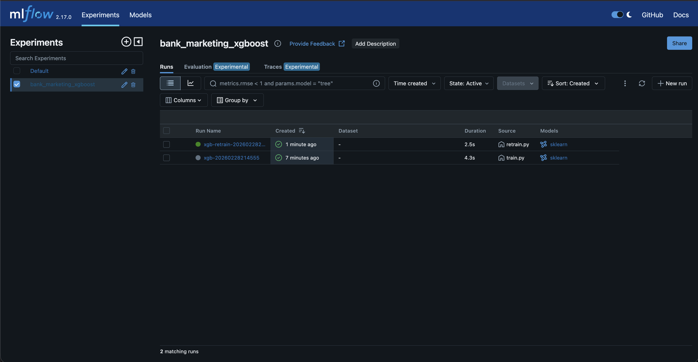
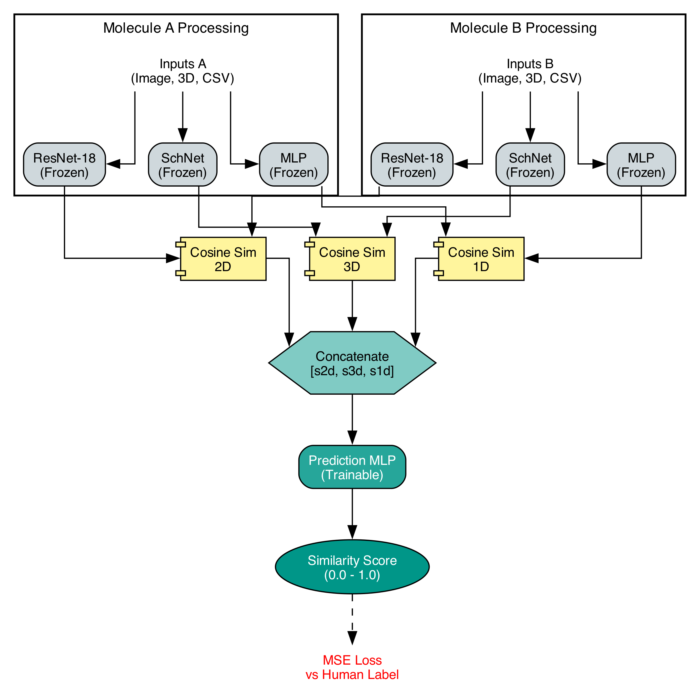
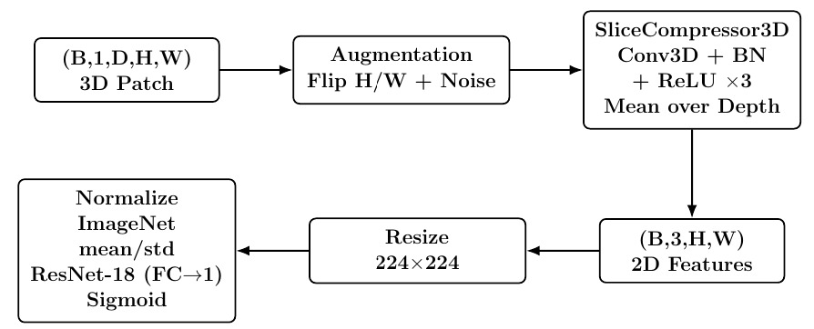

documents automated in an OCR plus T5 ingestion workflow
Machine Learning Engineer Portfolio
I build machine learning systems with measurable outcomes.
I am an MS Data Science student at the University at Buffalo with experience in developing and deploying NLP and computer vision systems on AWS. I focus on building multimodal models, robust MLOps pipelines, and semantic search systems across academic and production environments.
- swaminathansankaran21@gmail.com
- +1 (716) 533-2867
- Buffalo, NY
service uptime on Dockerized ML microservices deployed to AWS
documents indexed in a hybrid keyword and vector retrieval system
validation AUC on patch-level volumetric CT scan tamper classification
Selected Projects
Projects that best represent how I work.

MLOps / Production Systems
Drift-Aware MLOps Pipeline
Designed a drift-aware pipeline to detect silent model degradation and trigger automated retraining, improving model reliability under changing data distributions.
- Built and containerized the system using FastAPI, Airflow, and MLflow with Evidently AI.
- Monitored system health in real time using Prometheus and Grafana dashboards.
- Simulated concept drift, triggering automated retraining that recovered +0.1178 ROC-AUC on shifted data.
FastAPI
Airflow
MLflow
Evidently
Prometheus
Grafana
Docker
View repository

Multimodal Deep Learning
Molecule Similarity Prediction
Multi-modal architecture fusing 2D image features (ResNet-18), 3D geometry (SchNet), and fingerprint embeddings to improve candidate selection for drug discovery.
- Trained with contrastive learning across 291,742 molecules.
- Achieved ~0.92 Pearson correlation on 200 expert-annotated pairs.
- Outperformed the Tanimoto similarity baseline on unseen molecular pairs.
PyTorch
ResNet-18
SchNet
Contrastive Learning
RDKit
View repository

Medical Imaging
Patch-Level CT Tamper Classification
Built to detect tampering at the patch level within CT scans, where localized manipulation is harder to catch than whole-scan forgeries.
- Jointly trained a 3D convolutional compressor with an ImageNet-pretrained ResNet-18.
- Processed 169 volumetric lung CT scans to convert 16-slice 3D patches into compact 2D feature maps.
- Achieved 0.95 validation AUC, outperforming 2.5D, 3D, and projection baselines.
PyTorch
DICOM
3D CNN
View repository
Experience
Industry work with operational and business impact.
Zolvit
Machine Learning Engineer Intern
Impact & Results
- Eliminated ~23 hours of weekly manual data entry via Google Vision OCR and T5-large.
- Improved legal precedent retrieval precision by ~28% for lawyers across 10,000+ documents.
- Drove 99.9% service uptime and eliminated recurring outages with Docker and AWS EC2.
Systems Built
- Hybrid search engine combining Elasticsearch keyword search with Pinecone vector embeddings.
- Document routing classifier achieving 92% accuracy on TF-IDF and Doc2Vec features.
- Automated ingestion pipeline replacing a fragile legacy process with FastAPI and monitoring via Grafana.
Skills
Technical focus
Programming & Data
Python, C/C++, SQL, R, Pandas, NumPy, DICOM, RDKit
Machine Learning
PyTorch, TensorFlow, Scikit-learn, XGBoost, Hugging Face, embeddings, contrastive learning
MLOps & Cloud
Docker, Kubernetes, AWS, Airflow, MLflow, Evidently AI, Prometheus, Grafana
NLP & Databases
RAG, LangChain, Elasticsearch, Pinecone, PostgreSQL, MySQL, Spark, Snowflake
Education & Awards
Academic Background
University at Buffalo
MS in Engineering Science (Data Science), GPA: 3.67
Vellore Institute of Technology
B.Tech in Computer Science and Engineering (AI and ML)
Recognition & Certifications
Felix Infausto Scholarship, 2025
Coursera: Machine Learning Specialization, Deep Learning Specialization
Contact
Interested in internship opportunities where model quality and system quality both matter.
If you are hiring for machine learning, applied AI, or MLOps internships, I would be glad to share more about the projects above.